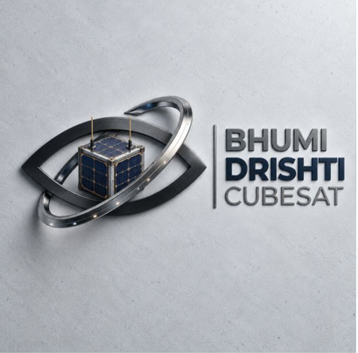

FACULTY ADVISOR · ASSISTANT PROFESSOR · HOD
Dr. Biswajit Patra
Academic counselor and patron of the Club. Specializes in banking and finance, risk management, financial econometrics, time-series analysis, and macroeconomics. Ph.D., IIT Bombay.

BHUMI-DRISHTI CUBESATThe faculty advisor and core student team driving the Bhumi-Drishti CubeSat Project.
Academic counselor and patron of the Club. Specializes in banking and finance, risk management, financial econometrics, time-series analysis, and macroeconomics. Ph.D., IIT Bombay.


“Articulating complex economic insights with absolute clarity.”


“Creating intellectual infrastructure to ignite economic curiosity.”